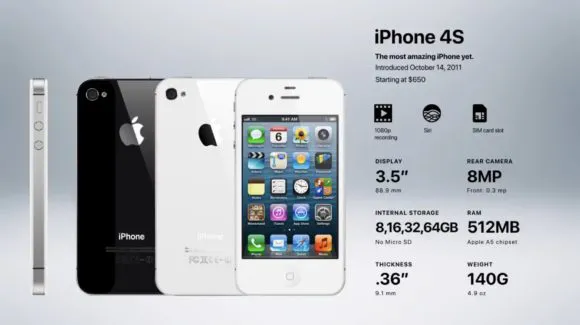

Generation 5: iPhone 4S
iPhone 4S Release Date: October 14, 2011
The iPhone 4S was released in October 2011, after several years of releasing the iPhone in the summer. It was an interim update to the phone, with some new features and increased functionality. However, most of the device stayed the same. The iPhone 4S was the first iPhone to be available on all three major US networks, which helped to boost sales. The phone sold over 1 million units on its first day and over 4 million units in its first weekend. The release of the iPhone 4S was also a momentous one because it was just nine days after the death of Steve Jobs, one of Apple's founders and one of the world's most well-known entrepreneurs. Jobs' death was a major loss for Apple and for the tech industry as a whole.
Specification
- An 8-megapixel camera capable of shooting videos in 1080p (up from 5 mp an 720p)
- An Apple A5, 32-bit, dual-core processor with speeds up to 1 GHz and 512 MB RAM
- Bluetooth 4.0
- iOS 5 (upgradeable to iOS 9)
- 8 hours talk time on 3G (up from 7)
- 6 hours of web browsing time on 3G (no change)
- 14 hours talk time on 2G (no change)
- 9 hours of battery life on WiFi (down from 10)
- 10 hours of battery life for videos (no change)
- 40 hours of battery life for just music (up from 30)
- 16GB ($199) 32GB ($299), or 64GB ($399) of internal memory (64GB model was added with the 4S)
iPhone 4S Countries and Carriers
The iPhone 4S was a major release for Apple, as it was the first iPhone to be available on all three major US networks. It was also the first time that a full version of the iPhone was released in China. This gave Apple unprecedented access to one of the world's largest markets. Prior to the release of the iPhone 4S, there were counterfeit and stolen iPhones on the market in China. However, the release of the iPhone 4S helped to legitimize the iPhone in China and made it more accessible to consumers. The release of the iPhone 4S was a major milestone for Apple and helped to solidify the company's position as a global leader in the smartphone market.